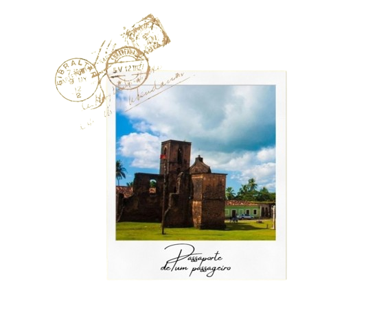

Conheça Alcântara!

Clique aqui para saber a sua localização!
Conhecida como "A cidade que o tempo não apagou", Alcântara preserva um
patrimônio cultural e arquitetônico riquíssimo,
que remonta aos tempos coloniais e escravocratas do Brasil.
Cada esquina conta uma parte da história desse lugar singular, e caminhar por suas ruas é
como
fazer
uma viagem no tempo, mergulhando em um passado repleto de memórias e emoções.
Uma dica preciosa para quem visitar Alcântara, no Maranhão, é reservar um
tempinho
para explorar os casarões históricos da cidade. Essas construções centenárias são
verdadeiras
relíquias
arquitetônicas que contam parte da rica história dessa região. Ao caminhar pelas ruas de
Alcântara,
não
deixe de admirar a beleza desses casarões coloniais, muitos deles preservados com todo o seu
esplendor
original.